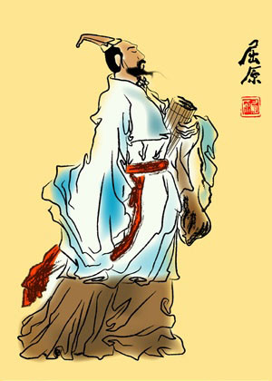

历史起源
小常识： 端午节在每年的农历五月初五，又称端阳节、午日节、五月节、重午节、龙舟节、女儿节等，是中国各族人民纪念屈原的传统节日。

端午节是古老的传统节日，始于中国的春秋战国时期，至今已有2000多年历史。据《史记》“屈原贾生列传”记载，屈原，是春秋时期楚怀王的大臣。他倡导举贤授能，富国强兵，力主联齐抗秦，遭到贵族子兰等人的强烈反对，屈原遭馋去职，被赶出都城，流放到沅、湘流域。他在流放中，写下了忧国忧民的《离骚》、《天问》、《九歌》等不朽诗篇，独具风貌，影响深远（因而，端午节也称诗人节）。公元前278年，秦军攻破楚国京都。屈原眼看自己的祖国被侵略，心如刀割，但是始终不忍舍弃自己的祖国，于五月五日，在写下了绝笔作《怀沙》之后，抱石投汨罗江身死，于是就有了端午节。